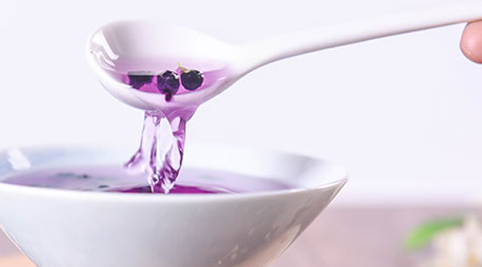
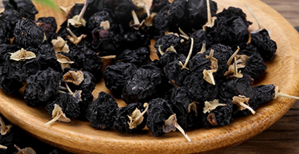
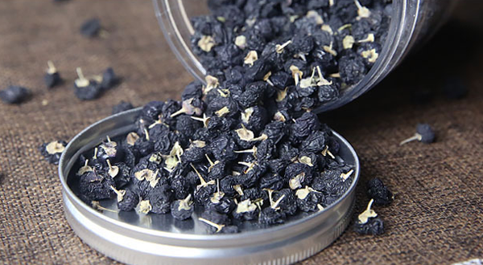

黑枸杞是又名的滋补药，黑枸杞的功效有着帮助睡眠、增强免疫力、补肾、美容养颜，但是黑枸杞并不是所有人都适合食用的，因为黑枸杞是有着容易引起腹泻、药性偏热是会导致上火，如果手术过后伤口没有痊愈使用黑枸杞是会引起伤口发炎。
1、 帮助睡眠
黑枸杞是能够帮助睡眠的，这是因为黑枸杞有着安神助眠的作用。长期失眠的患者会年纪看起来比同龄人要大，并且长期失眠的人有着注意力不集中健忘的症状。长期失眠的患者是可以使用黑枸杞泡茶饮用助眠。
2、 增强免疫力
黑枸杞有着增强免疫力的作用，这是因为黑枸杞有着很高的营养，经常使用黑枸杞是能够有效增强免疫力的。像长期营养不良食欲不好的人，可以经常食用黑枸杞来进行增强免疫力滋补身体。老年人也可以常用枸杞子来滋补，能够帮助增强身体抵抗力。
3、 补肾

黑枸杞有着补肾的作用，枸杞本身就有着滋补肝肾的作用，所以黑枸杞是有着补肾的功效的。并且黑色的食物是可以入肾的，所以黑枸杞有着很好的补肾的作用。黑枸杞是能够补肾，所以黑枸杞是适合男性使用的滋补药。
4、 美容养颜
黑枸杞有着很好的饿养颜美容的作用，黑枸杞能够淡化色斑并且黑枸杞能够有效的美白和淡化疤痕，所以女性是可以喝黑枸杞来美容养颜。黑枸杞中含有丰富的蛋白质以及微量元素是美容养颜的好药材。
1、 引起腹泻
黑枸杞的副作用有着腹泻，因为黑枸杞导致的腹泻主要是针对肠胃不好的朋友。这是因为肠胃不好引起的腹泻，这种腹泻多是因为本身肠胃不好导致的。还有一些患者的腹泻是因为对黑枸杞过敏所以导致的腹泻。
2、 导致上火

黑枸杞药性偏温，所以黑枸杞是会引起上火的，黑枸杞引起的上火是比较正常的，所以体质偏阳性的不建议使用黑枸杞滋补。黑枸杞吃多了会出现口舌生疮的症状。
3、 引起伤口发炎

手术过后是不能立马使用黑枸杞来滋补的，因为黑枸杞是会导致伤口发炎所以有伤口，缝针的朋友是不能使用黑枸杞来进行滋补的。
结语：通过上文的介绍，相信大家都了解了关于黑枸杞的功效与副作用，黑枸杞是有着很好的滋补身体美容的作用，黑枸杞的副作用主要是肠胃不好和有伤口的人不宜食用。